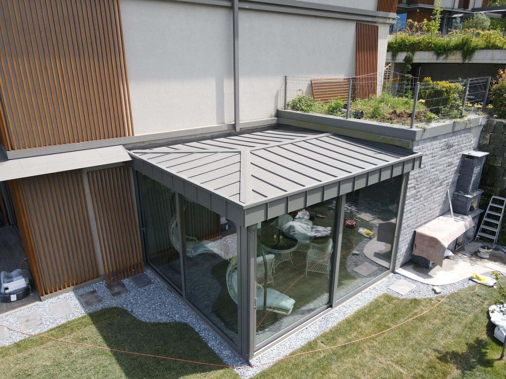

Kenet çatı · Düşler Vadisi, Riva
Mimarinin bir parçası olarak çatı
Mevcut yapının mimarisine özel projelendirilen alüminyum kenet çatı; farklı eğim ve birleşim noktaları yapıya uygun çözüldü. Hedef, estetik bütünlüğü koruyan ve uzun yıllar güvenle kullanılan bir sistemdi.
Kenet çatı için keşif iste